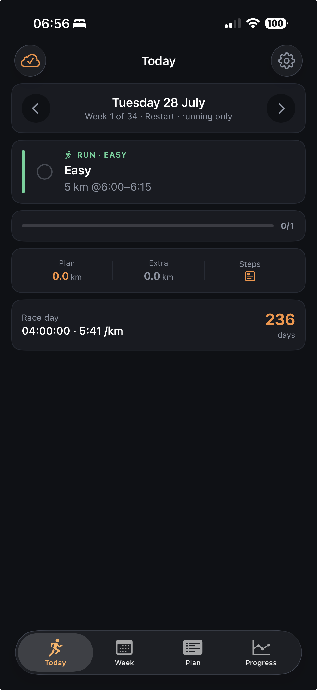
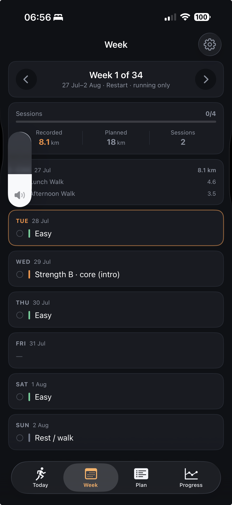
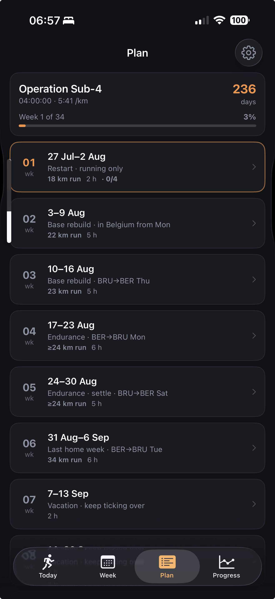
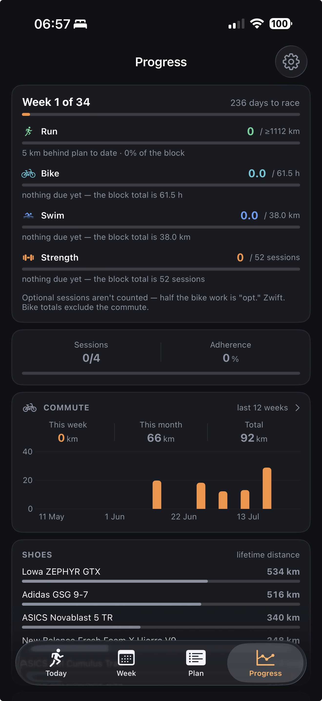
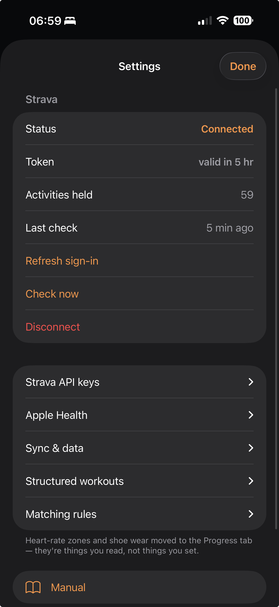
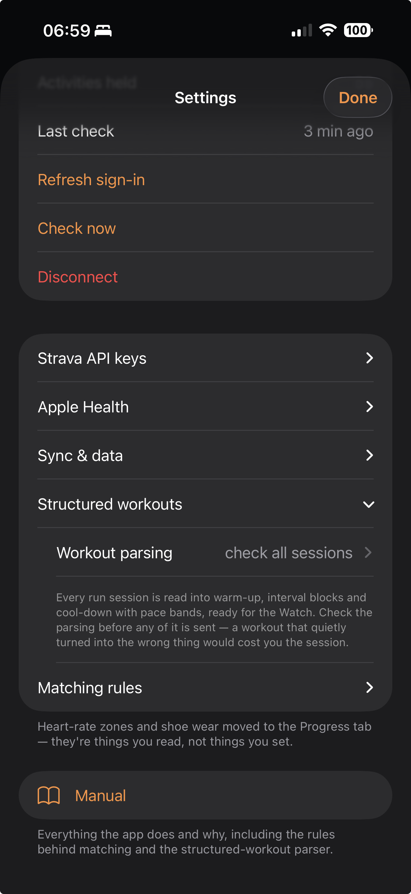
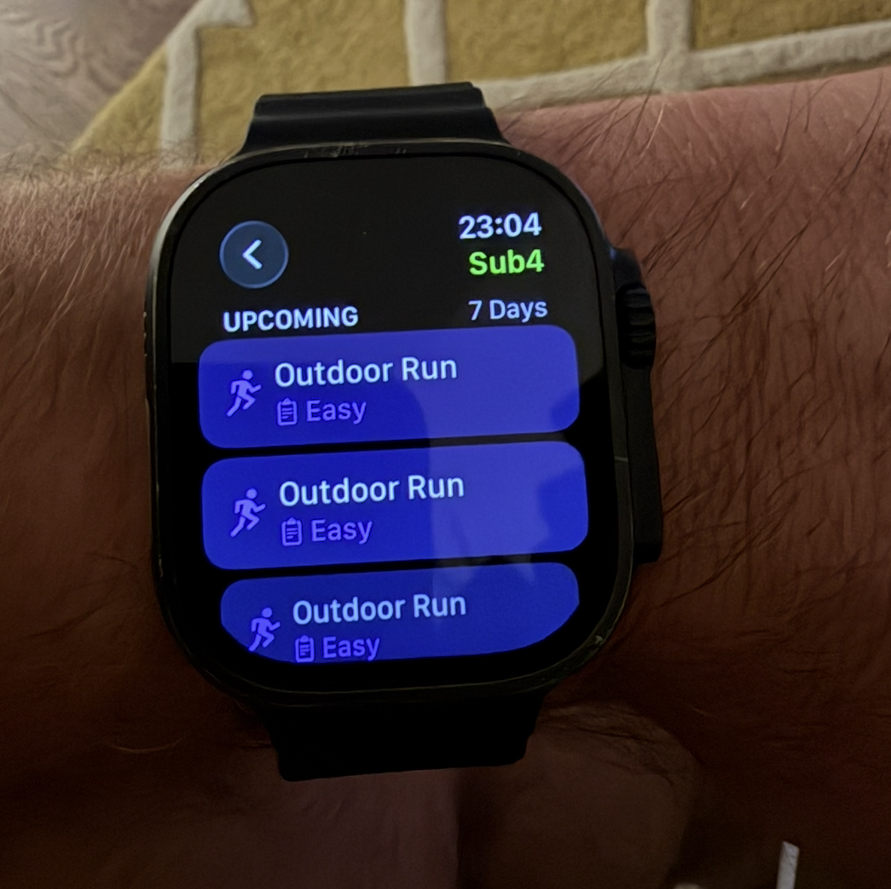

A personal iOS training app for Operation Sub-4: a 34-week marathon block ending 21 March 2027, target 4:00:00 (5:41 /km).
Version: build of 29 July 2026 · 56 Swift files · ~17,600 lines · iOS 26 / SwiftUI
Sub4 shows a marathon training plan and tells you, honestly, whether you are doing it.
The plan was written as an HTML document — 34 weeks and 252 sessions across running, cycling, swimming, strength and rest — 260 counting the logged July prologue the document opens with — plus a library of 20 strength exercises with video links. A Python script (extract_plan.py) parses that HTML into plan.json, which ships inside the app.
Everything you actually did comes from Strava. The app never asks you to log anything, never has a "mark as complete" button, and never records a workout itself. It reads your Strava activities and works out which planned session each one satisfies.
The result is three answers, always available:
And, since July 2026, a fourth: the plan can be sent to your Apple Watch as a structured workout, so intervals run themselves.
These explain most of the design decisions and are worth understanding before the feature list.
There is no manual logging of training anywhere in the app. If a session shows as not done, the activity has not arrived from Strava. This removes an entire class of bug — two records of the same run that disagree — and means almost all of the local database is a cache, not an original.
Four things are exceptions and exist only on the phone: your Strava and Claude API keys, any manual match corrections you make, session notes, and the saved monthly reviews. The keys and the corrections are settings. The notes and the reviews are the original data the app holds — Strava cannot send them back, and a review cannot be re-run against the state it saw, so they are the only things here worth backing up. Delete everything else and the app rebuilds itself completely.
Where the plan states a number, the app uses it. Where the plan states nothing, the app says so rather than inventing something plausible.
Concrete examples you will see:
4×8min @4:55–5:10). Kilometre splits cannot isolate an 8-minute rep from the warm-up around it, so those sessions are read as reps instead — see §6. Where the reps cannot be found, the target is shown and no verdict is claimed.4×8min @4:55–5:10, or a pointer run "by feel, ~30–45 min"), the app converts it at the pace that session states — the easy band where it states none. Fifteen of the 34 weeks are marked ≈ — eleven hold work written in minutes, and four more (12, 14, 32 and 33) only because a session ends in a bare "+ CD" that states no distance. They were floors until patch 19, which was worse: ten pointer runs contributed nothing at all, and weeks 7–9 read "≥0 km planned" against roughly 23 km each.There is exactly one deliberate exception, and it is labelled in the interface: strides. The plan writes 4×20s strides and never states the jog between, because to a runner it is implied. Parsed literally that becomes 80 seconds of continuous strides, which is not the session. The app assumes 60 seconds easy and says so on screen.
The matcher is deliberately conservative. When it is not confident, it leaves the activity unmatched and shows it separately under "Extra movement", where you will notice. A wrong match would quietly corrupt your adherence numbers for the rest of the block.
You can always correct it by hand — see §5.
Activities that do not match a planned session are not discarded. Walks, kayaking, rowing, commutes — all kept and shown. The app tracks your whole movement picture, not just the plan.

The main screen. Shows one day at a time; arrows step backwards and forwards.
Race day — first card on the screen, counting down to 21 March 2027 with the target beneath it. It is at the top because it is the only figure here that does not change when you step to another day, and it is what every session on the screen is for.
Header — the date, the week number and that week's theme (e.g. "Week 1 of 34 · Restart · running only"). Days before the plan starts show "Post-Ironman · before the plan".
Session cards — one per planned session for that day. Each shows discipline, title, and the plan's own description. Tapping the upper part opens the full session detail; when a session is done, a strip underneath shows what you actually recorded (distance, time, pace, heart-rate zone) and tapping that opens the activity sheet.
Between the prescription and the recorded strip, each card prints the plan's own fuelling line — 180 of the 260 sessions carry one, and the 78 that read "water only" are drawn quieter, because they mean there is nothing to carry. The four sessions that rehearse or run the race-day warm-up carry a second line above it. Both tap through to the fuelling reference, the long-run ladder or the race-day warm-up (see §10).
An empty circle means not recorded; a filled tick means matched. On the right of each card is the note button — a pencil when there is no note, a filled quote mark when there is; any note you have written is printed on the card itself. Long-press a card for "Fix match…" and the note action.
Load — one strip under the movement card, and only on days that recorded something: the day's training load, and either your freshness or your fitness. Two figures, no chart — Today answers "what am I meant to do and did I do it"; the curve lives on Progress.
Three things it is careful about. The freshness half is gated: inside the warm-up, or with too much of the window filled in, it shows fitness instead, because a freshness figure computed from three weeks of history looks exactly like a real one and this is the screen read in a hurry. Stepping back through the days pairs that day's load with that day's freshness, not with this morning's. And a gap day — one where training happened and nothing could be scored — reads "— not scored", never "0", because those are different facts.
Extra movement — everything recorded that day which is not part of the plan. Each row opens the same activity sheet.
Movement card — the day's totals: plan kilometres, extra kilometres, and step count from Apple Health.
Toolbar — the cloud icon on the left shows sync status and syncs when tapped. The gear on the right opens Settings. Pull down anywhere to sync.

Seven days at a glance, one card per day, with arrows to move between weeks. Weeks run from the ingest cutoff (1 January 2026) through race week, so the Ironman build, the post-race block and the plan proper form one continuous sequence.
Each day card lists its planned sessions (tap to open) and its extra activities. Every session line carries the same note button, fuelling line and warm-up line as Today, with the note's one-line gist printed beneath it. A summary at the top gives sessions done/total, recorded distance against planned, and a session count.
Today's card is outlined in the accent colour. (It is the Plan tab that outlines the current week.)

The whole 34-week block, one row per week: week number, date range, theme, planned running kilometres, the plan's own all-sport hours for that week, and — for weeks that have already started — a done/total count.
Weeks are weighted the way the plan weights them. The source document badges every week — and that classification, not one invented in the app, is what drives how each row is drawn:
| Weight | Weeks | Treatment |
|---|---|---|
| Hard | 17 and 32 (peak long run), 20 (December test), 34 (race week) | Filled badge, a coloured leading bar and a faint edge — amber for the peaks, green for the test and race week |
| Recovery | 16 cutback, down, holiday and taper weeks | Outlined badge, and the row itself dimmed |
| Ordinary | the other 14 | No badge, no bar, full weight |
Recovery weeks are dimmed rather than the hard weeks merely brightened. Sixteen of the 34 are cutbacks; at full weight the list would still read as uniform, because half of it would be competing for attention. The current week is never dimmed — you need to find it. Every badge carries its own text, so the colour is never the only signal.
The same badge appears in the Week tab header.
Weeks that have not begun deliberately show no completion figure. "0/8" for a week in November would read as failure rather than as "hasn't happened yet".
Tap any week for its seven days — the day cards there are the same ones Week uses, note buttons included.
The volume chart sits above the 34 rows and answers the one question a list cannot: is the load going where it should? A bar per week, a line for that week's longest run on the same axis — never a second scale — and a dashed rule on the current week. Hard weeks are amber, recovery weeks grey, everything else green; the same information is in the week numbers and the legend, so nothing depends on colour alone. Faded bars are the estimates described above — a run written in minutes, or a bare WU/CD with no distance stated. Tap a bar for that week's tag, composition and total; the ✕ returns to the block summary.
What is in the bar: every distance the plan states. Running in kilometres, swimming in metres, cycling in kilometres if a plan ever writes it that way — 1,223 km of running and 38 km of swimming in this block, ≈1,261 km in total. Running is drawn from the baseline in the week's own colour and everything else is stacked above it in blue, so a second sport is visible rather than hidden inside a total. The legend names it (Swim here, Other sports once there are two).
What is never in it: time. A session written as "2 h outdoor Z2" contributes zero. Converting an hour to a distance needs a pace the plan does not state for that sport, and the guess would arrive wearing the same units as the measurements next to it — which is how a chart starts lying. The bike's 61.5 required hours are not in this chart at all; Progress counts them in hours, where they belong. Running is the single exception, because the plan does state a pace for the runs it writes in minutes, and those weeks are faded and marked ≈.
Strength and rest days are excluded by sport, and that is a correctness rule rather than a tidiness one. Two strength sessions in this plan quote a running distance — "Heavy · 30 km long run this week — keep 2 RIR honest" and "Heavy · 30 km + MP Saturday — 2 RIR honest". That 30 km belongs to Saturday's run; a parser trusting the text over the discipline would add 60 km of squatting to the block.
It is computed from the same estimator as everything else, not drawn. If the plan is ever rewritten — which is exactly what the monthly review exists to do — the chart moves with it. A picture of the plan that could disagree with the plan would be worse than no picture.
Fuelling & race day sits between the chart and the week rows: products, per-session targets, the long-run ladder and the race-day schema (see §10).
Note on the kilometre figures: the plan's own weekly headline (e.g. "~275 km") is total multisport volume including the daily bike commute. The Plan tab shows running kilometres, computed from the sessions themselves, and labels the plan's own number "km all sports" so the two can't be confused.

Everything about how you are tracking.
Where we are in the plan — week N of 34, days to race, and a row per sport showing what you have done against the block total, each in the unit the plan actually uses:
| Sport | Unit | Block total | Why |
|---|---|---|---|
| Run | km | ≈1,223 km | the sport the plan states distances for week after week |
| Bike | hours | 61.5 h | every bike session reads "2.5 h Z2" — never a distance |
| Swim | km | 38.0 km | always written in metres |
| Strength | sessions | 52 | no distance, no consistent duration |
Optional sessions are excluded — 24 of the block’s 51 bike sessions are "opt." Zwift, worth 25.75 hours. Counting those would show you permanently behind for skipping work the plan calls optional. Bike totals also exclude your commute.
Each row shows a bar for block progress and a line for whether you are on plan to date.
Fitness — the curve, above the review because the review cites it. Two lines and a shaded gap:
One axis, because all three are the same units. The top of the axis is set from the data rather than left to Swift Charts, whose "nice number" ladder is 1 / 2 / 5 × 10ⁿ — a peak of 110 was getting an axis to 200 and leaving the top 45% of the card empty. A finer ladder rounds it to 120, and the same chart uses 92% of its height instead of 55%. The headline is CTL with its ramp — "building · +2.4 CTL/week" — since the ramp is what a build is actually steered by, and reading it off a slope by eye is not the same as being told. A dashed rule marks the day the plan starts, so the Ironman block draining away and the marathon block beginning are one picture. The window is 120 days: far enough back to show where you are starting from, short enough that a week is still a visible distance.
Tap the chart to open it in a floating panel. The panel is inset from every edge with the page dimmed behind it — edge-to-edge would read as changing screens, whereas a panel reads as something opened on top of what you were looking at. A small red ✕ closes it, and so does tapping off the panel.
The picture is pinned to the world, not to the screen. It is always the wide chart. Turning the phone does not rotate the graph — it rotates the phone around it: same layout, same aspect, same marks in the same places, and it simply becomes readable. That needs one correction that is not obvious, because the interface is itself allowed to rotate: a fixed quarter-turn would be applied on top of the system's own rotation, so the graph would be sideways in portrait and sideways again once you turned the phone. The rotation is therefore applied only while the interface is portrait, cancelling the system's rather than adding to it, and the panel is built long-side-to-long-side either way so nothing reflows. Expanded means more, not bigger: the fitness chart shows the whole series from January instead of 120 days, with a cursor you can drag to read fitness, fatigue and freshness for any single day; the commute chart shows a year instead of a quarter. The remaining Progress charts get the same treatment next.
When the curve is not worth believing, the caveat replaces the headline rather than sitting under it. Inside the 42-day warm-up, or with more than a fifth of the recent window filled in for days nothing could score, there is no bold number and no chart — just the sentence saying why. A fitness curve is the most authoritative-looking object this app can draw, and authority is exactly what it should not have while it is guessing.
Monthly review — the review window and how many flags it raised, opening the review itself (see §9). A blocking flag is visible without opening it.
Sessions / adherence — completed non-rest sessions as a count and a percentage.
Commute — this week, this month, all time, plus a 12-week bar chart. Tap for the full view with the recent-rides list. A commute is any ride below the 10 km training threshold; the app tracks these itself rather than using Strava's commute flag, because flagged rides drop off the heatmap.
Shoes — every pair with a wear bar, amber past 600 km. Lifetime distance comes from Strava.
Weekly run volume — recorded running against planned running, per week.
Longest run — the marathon metric that matters most, with the peak the plan builds to.
Run pace — every run over 3 km plotted against the 5:41 target line.
Time in zone — sessions grouped by average heart-rate zone, with the bpm ranges on the axis.
Charts hide themselves until there is enough data to read.

Reached by the gear in the top-right of any tab.
Strava (always open) — connection status, token validity, activities held, last check. Buttons to connect, refresh the sign-in, check now, or disconnect.
Seven collapsed groups:
Below the groups is Manual — this document, readable inside the app. At the foot, always open, is Version — see §15.
Heart-rate zones and shoes are not here — they moved to Progress, because they are things you read rather than things you set.
The app is being extended with a training-load engine — Banister TRIMP, a fitness/fatigue curve, and load flags in the monthly review. This group is the first piece of it, and it exists before any load figure does, deliberately.
TRIMP is an exponential function of (HR − rest) / (max − rest). Both ends of that fraction are estimates and both sit under an exponent, so a maximum that is 15 bpm wrong does not shift the answer slightly — it bends the whole curve. Nothing computed downstream is worth reading until these two numbers are ones you recognise.
Max heart rate is the highest recorded across the last 12 months of activities, which is only correct if a genuinely maximal effort is inside that window — worth re-checking after the December test. The screen names the activity it came from, so you can go and look at it. Your own value overrides it and always wins. A fall in the observed figure is ignored: it means the hardest effort has aged out of the window, which is not evidence that your maximum dropped. A rise is announced, because every load computed under the old figure was computed under a number now known to be wrong.
Resting heart rate is the tenth percentile of each month's daily readings from Apple Health — the tenth percentile rather than the minimum, because a single low reading is a nap or a bad contact rather than your resting rate, and five days minimum before a month gets a value at all. It is stored per month, so a January session is scored against January's resting rate rather than today's. Months with no Health data borrow from the nearest month within three; beyond that there is a manual fallback.
Health is read-only here as everywhere else, and iOS never reveals whether a read was granted — so if resting heart rate stays empty, the group says so rather than quietly scoring everything with a fallback.
Every day from the ingest cutoff to today carries a number, computed in one currency.
The currency is Banister exponential TRIMP, from heart rate: Σ minutes × ΔHR × 0.64 × exp(w × ΔHR), where ΔHR = (HR − rest) / (max − rest) clamped to 0–1, and w is 1.92. One computation for every sport, which is the entire reason for choosing it — a run, a ride and a swim can be added together honestly because the sum is of the same thing. TrainingPeaks adds rTSS to sTSS to power TSS; Strava mixes power load with HR load in one curve. Both are adding numbers from separately anchored scales, and neither can say what the sum means.
Each session lands on exactly one rung, and the rung is shown next to the number:
| Rung | Where it comes from |
|---|---|
| HR trace | integrated over the cached per-bin heart rate, weighted by each bin's own duration |
| avg HR | the session's mean heart rate against its moving time. Arrives with the activity at no API cost, and is where every day starts before the detail queue reaches it |
| power | for an outdoor ride with a meter and no heart rate at all — TSS from average power, converted (below) |
| unscored | nothing usable. Not zero |
The two HR rungs are not interchangeable, and the difference is measurable. Simulated against the app's own resampling: a steady hour agrees between the two to 0.1%, but an interval session with the same average heart rate scores 8% higher from the trace. The exponential is convex — the average of the exponent is not the exponent of the average — so the session average systematically under-scores exactly the sessions that were hardest.
Four day states, and the distinction between two of them is the point:
| State | Meaning |
|---|---|
| measured | everything eligible that day scored |
| partial | something could not be scored — the day's figure is a floor |
| rest | nothing eligible happened. A true zero, and it belongs in the curve |
| gap | things happened and none of them scored. Not a zero |
A fitness curve is an exponential average over a series with no holes, so rest days must be present as real zeros — treating "no row" as "no load" is the most common way a home-rolled curve goes wrong. But a gap is not a zero, and a curve drawn across one is wrong for six weeks afterwards. Gaps are counted, shown, and travel with every total on screen rather than being available somewhere else.
What counts as load: anything that could satisfy a planned session, plus anything of 10 km or more in one recorded session. So a 12 km walk counts and the walk to the shop does not; a training ride counts and the 3 km commute does not. Zwift counts — an optional session is still real load.
Power, for the rides that have no heart rate. About half the long rides in this history carry a meter and no heart-rate trace — a 120 km ride on 29 May, four hours, 188 W, scoring nothing. Those are now scored:
TSS = (average watts / FTP)² × hours × 100
load = TSS × k
Three things about that are worth knowing.
It uses average power, not normalised power. NP needs a 30-second rolling mean, and traces are stored as 300 equal-distance bins — on a four-hour ride that is roughly 48 seconds per bin, longer than the window NP averages over. Any "NP" computed from it would be an average of averages wearing a technical name. Average power is on the activity itself, so this works on the whole history immediately without waiting for a backfill. The cost is stated: NP ≥ AP always, and the gap grows with variability, so a surging ride reads low. The trace is used to check that rather than assume it — above a coefficient of variation of 0.5 the figure is flagged as a floor.
k is measured, not assumed. TSS and TRIMP are separately anchored scales, and adding them is the exact unit mismatch the single-currency decision exists to prevent. So every ride carrying both a heart rate and a meter has both numbers computed, and the median of their ratios is the conversion. Below five such rides there is no factor and power-only rides stay unscored. The factor, the number of rides behind it and how much they disagree are all on the diagnostics screen.
It is outdoor rides only, and that gate is load-bearing. Runs carry device watts too — running power from the watch. Divided by a cycling FTP that is an intensity factor near 1.0 for an easy run, and multiplying it by a factor measured on a bike produces a number several times the truth. Trainer rides are out for the same reason the calibration leaves them out: a turbo is a different power source. The FTP itself must be the measured one from Strava — an estimated FTP is derived from ride data, so scoring rides against it would be scoring them against themselves. Since the intensity factor is squared, a 10% error in FTP is a 20% error in the load.
Why RPE is not the third rung. The source spec makes RPE × minutes the fallback, and never addresses the problem with that: RPE 5 for an hour is 300, while an hour at ΔHR 0.7 is 108. Substituting one for the other is the same unit mismatch the single-currency decision exists to prevent, and it would put a step in the curve wherever a note happened to exist. So RPE is computed and carried alongside, never summed. Once enough sessions carry both an RPE and a heart-rate score, their ratio is measurable and the conversion can come from a number derived here rather than assumed.
Nothing is persisted. There is no load.json. Every input — activities, traces, constants — is already on disk and already complete, and the whole series rebuilds in milliseconds. A cache would add exactly one thing: the possibility of being stale without anyone noticing. Instead the inputs are fingerprinted, and the series rebuilds whenever the fingerprint moves — which includes a trace arriving, so a day silently upgrades from avg HR to HR trace as the backfill drains.
Settings → Training load → Load diagnostics is the raw layer, and it ships rather than being a debug screen to delete later. Day states, per-session rungs and flags, what could not be scored and why, and a self-test that runs the published Banister worked example — 60 minutes at HR 150 with a resting rate of 50 and a maximum of 190 scores 108.1 — along with the clamps and helpers around it. If any of those stop matching, every load figure in the app is wrong, and the screen says so.
Worth watching in the first two weeks: the gap count, the trace-versus-average mix (which should fall towards all-trace as the backfill drains), and anything flagged above HR max.
Two exponential moving averages of the daily series and the difference between them:
CTL[d] = CTL[d−1] + (load[d] − CTL[d−1]) / 42 fitness
ATL[d] = ATL[d−1] + (load[d] − ATL[d−1]) / 7 fatigue
TSB[d] = CTL[d−1] − ATL[d−1] freshness
That is the entire model. Everything interesting about it is in what the series contains, which is why the load engine and its four day-states were built first.
TSB uses yesterday's values, and that is not a rounding detail. This morning's session is already in today's fatigue, so a same-day figure would tell you that you are tired because you trained — which you knew. Yesterday's difference is the state you started today in.
42 is a time constant, not a half-life. The half-life is 42 × ln2 ≈ 29 days. The tooltip claiming your fitness halves in six weeks is wrong, and it is everywhere.
Gaps are imputed and counted. A gap day is the one case with no honest answer: zero is wrong because the training happened, and skipping it is wrong because an average needs a value. So it takes the mean of the trailing seven usable days, is marked as filled in, and the count travels with the curve. Above a fifth of the last 42 days filled in — the window the averages actually reflect, not the whole series — the curve stops claiming to be one. A partial day is never imputed: something scored and something did not, so it reads low and says so.
Warm-up is measured from the first day with training in it, not from the start of the series. The series runs from 1 January whether or not anything was recorded, so counting days would measure the calendar — and on a fresh install a curve made entirely of rest days would report itself as forty-two days of evidence.
The freshness word is descriptive, never advice — Deep, Loaded, Steady, Fresh. The literature is explicit that race-day TSB targets are folklore, so the app says what the number is and stops.
The ramp rate — CTL now minus CTL seven days ago — is the figure the monthly review will act on.
Max heart rate can contradict your own zones. If the highest rate ever recorded sits at or below the floor of your Strava Z5, it cannot be a maximum: you have said you train above it. The app flags this rather than correcting it, because an estimate from zone boundaries would be another guess wearing the same units. It matters more than anything else here — an easy run at HR 130 with a resting rate of 50 scores 1.88 TRIMP per minute against a maximum of 160 and 1.28 against 180. A 20 bpm error moves every figure by 47%, and not uniformly.
Power is now fetched, and not yet used. Several long rides in this history carry a power meter and no heart rate at all, which makes them unscorable — and the bike is 61.5 hours of this plan. Watts are collected from now on so that those rides can eventually count; converting them into the heart-rate currency needs a factor measured from rides that have both, and those have to be collected first. It is fetched now rather than later because a full trace backfill is already running, and asking afterwards would mean paying for all 250 traces twice.
The version number changes when max heart rate changes, and only then. That single change invalidates every load ever computed, which is what one counter is the right shape for. Resting heart rate is not global — the current month's percentile drifts as readings arrive — so its staleness will be tracked by storing the figure used on each load row rather than by bumping a shared counter that would mark January stale every morning.
For any given day the matcher takes the planned sessions and the Strava activities and pairs them up.
Step 1 — manual overrides win outright. Anything you set by hand is honoured, including "explicitly nothing".
Step 2 — rest days complete themselves. A rest day is done by doing nothing; there is never an activity to find.
Step 3 — automatic matching by discipline, best fit first. Sessions with a stated distance are resolved before vague ones so they claim the right activity. Where several candidates exist, the one closest to the planned distance wins.
Anything left over becomes "Extra movement".
Before matching, activities are filtered so the daily commute is never mistaken for a training ride:
| Discipline | Minimum to be matchable |
|---|---|
| Ride | 10 km |
| Run | 1.5 km |
| Swim | 400 m |
| Strength | 5 minutes |
These come from real history: your commute is consistently 3.2–4.2 km and every genuine training ride is over 20 km, so 10 km separates them with a wide margin.
Failing this filter does not discard anything. It only means the activity cannot satisfy a planned session. It still appears under Extra movement and still counts toward total volume.
Long-press a session card → "Fix match…" → choose the correct activity, or "none". Overrides are stored locally and permanently, and survive re-syncs. A hand-matched session shows a small hand icon.
Two activities of the same sport starting within 10 minutes of each other with similar distance are treated as one upload. This is not theoretical — 21 April 2026 has the same ride recorded twice by two devices, 61.7 km and 60.4 km.

Opens from Today, Week or Plan wherever something is recorded, and from any extra-movement row. Three layouts, because three disciplines ask different questions.
Header — name, type, date and start time.
Hero figures, chosen per discipline:
Verdict card (runs only, and only when the plan states a measurable target). Reads the plan's own wording and judges the right part of the run:
| Plan wording | What gets measured |
|---|---|
8 km @5:45–6:00 |
the whole run |
18 km, last 5 km @5:38–5:43 |
the closing 5 km |
2k WU + 2×4km @5:38–5:43 |
the best continuous 4 km |
26 km, middle 10 km @… |
the best continuous 10 km |
2k WU + 4×8min @4:55–5:10 |
the reps themselves — see below |
Timed intervals are measured over the reps, never over the run. Judging the whole run against a threshold target would fail a session executed perfectly, and kilometre splits cannot separate an 8-minute rep from the warm-up around it. So the verdict is computed on the work alone — "4 reps · 32:04 of work at 5:02 /km · target 4:55–5:10 · three of four inside the band" — and the warm-up, the floats and the cool-down are excluded from it.
No verdict is claimed unless the rep count matches the plan. Three reps where the plan asked for four means either the session changed or the split is wrong, and nothing in the data says which. The reps are shown; the judgement is withheld and the reason is printed.
Planned session — the plan's wording, verbatim.
Route — the GPS trace. Online it is a real map; offline it falls back to the same coordinates drawn as a bare line on the card, because MapKit with no network is a grey grid that reads as broken. Start and finish are labelled.
Profile — heart rate, pace, elevation and grade against distance. Chips toggle each on and off; several can be shown at once as stacked panels sharing one distance axis. Drag any panel and a cursor line appears on all of them, each panel's header shows its value at that point, and a red dot tracks along the route on the map above.
Elevation and grade carry a caption when the numbers say "flat" — e.g. "Elevation spans just 3 m over 5.5 km — GPS jitter, not terrain."
Kilometre splits — drawn as deviation from a baseline rather than bars from zero, because every kilometre of a marathon block is roughly the same length and zero-origin bars would say nothing. The baseline is the plan's target where one exists, otherwise that session's own median. Cool means faster, warm means slower, and both are labelled.
Three ways to read a run. The splits card carries a Km · Laps · Reps control, and only offers the modes that have something behind them:
| Mode | Where it comes from |
|---|---|
| Km | Strava's splits_metric — moving time per kilometre. Always present |
| Laps | the marks the watch recorded. Nothing is inferred. Uniform 1 km auto-laps are ignored: ten of those on an easy run are not ten reps |
| Reps | segmented out of the pace trace, for a session the plan writes as intervals |
A session prescribed in minutes opens on its reps; everything else opens on kilometres. Tapping the control overrides that for as long as the sheet is open.
How reps are found, and when the app refuses to find them. The run is walked in order and cut where the pace changes — not searched for its fastest four eight-minute windows, which is the tempting version and returns a flattering answer for any run, including one where the reps were never done. A rep run slowly stays in the list, slow.
The threshold comes from the plan where the plan states it (3×6min @4:55–5:10 (2min float @6:00–6:15) gives both bands, and the cut goes between them) and from the run's own slow quartile where it does not — only one of this block's timed sessions states a float pace, so the second case is the usual one. The threshold actually used is printed under the table as a number, every time, along with where it came from.
It gives up, and says so, in four situations: the trace is too coarse to hold a rep (fewer than six samples in one — the two 3×1min primers in weeks 20 and 34); the cut does not separate anything, so more than 70% of the run reads as work; nothing at all separates out; or it finds more than twice the reps asked for. Tested against simulated executions of all five 5–15 minute sessions in this block, at eight different noise levels: rep count exact every time, durations within three seconds, pace within two seconds per kilometre.
The last few metres are not a kilometre. A run of 5,020 m leaves a 20 m fragment at the end, and there is no pace in 20 m of GPS — the sample is shorter than the error around it, so a second either way swings the derived figure by minutes. Anything under 100 m is dropped from the panel. It used to be shown, and it printed raw seconds in a column of paces ("0:04"): the table scales its bars to the largest deviation on show, so one impossible value flattened every real kilometre into a stub and the panel stopped meaning anything.
A genuine part-kilometre — the 532 m at the end of a 5.5 km run — is still shown, labelled with its distance and dimmed, but it no longer sets that scale either. A 300 m sprint finish is a real number and belongs on screen; letting it size the gutter would cause the same failure one order of magnitude down. Those bars clip at the edge instead. The header's pace still counts every metre run, fragment included, because that figure is total time over total distance.
Heart rate — average and maximum with the zone chip.
Intervals — swim laps, with pace per 100 m.
Best efforts — Strava's own, for runs.
Footer — elevation, energy, power, cadence, shoe, device, elapsed time, and any description.
For a target the plan states over the whole run, the verdict uses the average moving pace — total moving time over total distance, the same arithmetic that produces the pace in the header. The two can never disagree.
It briefly did not. The verdict used the median kilometre split, which on a 5 km run is simply the third kilometre with the other four discarded, and produced a card reading 6:03 /km at the top with "5:57 — faster than asked" underneath. Both numbers were correct; they were answers to different questions, and neither said which.
The sentence under the verdict is also measured against the bound you crossed, not the middle of the range. A run 3 s/km outside a 6:00 bound was being described as "10 s/km faster than the middle of the range" — a larger, different miss than the one being flagged, on the same card.
Targets over part of a run — last 5 km, best 4 km — are averages over exactly those kilometres, and the card names which in the top-right.
Splits use Strava's splits_metric, which reports moving time per kilometre. Deriving them from the raw stream instead folds stopped time into the average — measured that way, a 5:58/km run reads as 6:58/km.
The profile chart is different: it integrates nothing. Every sample is an instantaneous reading at a known distance, so a stop shows as a genuine dip rather than contaminating its neighbours. Same data, different job, opposite answer.
The plan writes sessions as prose. Sub4 reads that prose into a structure and can send it to the Watch, where Apple's own Workout app runs it with pace alerts.

Every run session is read into warm-up, interval blocks, steady steps and cool-down, each with a goal (distance, time or open) and an optional pace band.
92 of 103 run sessions parse. 11 refuse — the "(pointer) — by feel" runs and the field test, which state no structure on purpose.
Worked example:
Plan: MP intervals — 2k WU + 2×4km @5:38–5:43 (1k float) + CD
Parsed: Warmup 2 km no target
Rep 1 of 2 4 km 5:38–5:43 /km
Float 1 km no target
Rep 2 of 2 4 km 5:38–5:43 /km
Cooldown open no target
The float goes between reps, not after the last one. Two reps take one float — 5 steps and 11 km, not 6 and 12.
The float's own pace is now carried through. Where the plan writes (2min float @6:00–6:15), the recovery step used to reach the watch with no target at all: the parser searched for the pace after the closing bracket, which is where the next step begins. Fixed in patch 23 — the float on every sent workout now carries the pace the plan wrote for it.
Assumptions the parser makes are always shown on screen:
6–8 km) use the lower bound. A workout that ends early is recoverable; one demanding more than the plan asked is not.24 km, 2×6km) are part of the 24, not extra. The lead-in and cool-down split the remainder, and one side absorbs any odd 100 metres so the parts always sum to the stated total.

Any run session → "Structured workout" shows the plan's original wording, the parse step by step, and every assumption.
Settings → Structured workouts → Workout parsing lists all 103 sessions grouped by identical parse (54 distinct shapes), so the whole block can be audited in one scroll rather than one session at a time.
Do this before sending anything. A mis-parsed workout is worse than no workout, because standing outside at seven in the morning you will follow whatever the Watch says.

"Send this week to the Watch" on any structured session. It requests permission, clears anything previously scheduled, and pushes every parseable run in the next 7 days — Apple's ceiling is 15 workouts over that window.
They appear in the Watch's own Workout app under Sub4, named by day and distance (Tue · Easy 5 km). No Watch app needs to be installed: WorkoutKit pushes from the phone into the system Workout app.
The app reads back what the Watch actually holds rather than trusting its own send loop, so a rejected workout is reported rather than silently missing.
Sub4 pulls new activities while closed, so it is usually current when you open it.
Settings → Sync & data shows four things:
BGAppRefreshTask is opportunistic. "Next window" is a floor, not an appointment — iOS decides when, learning from when you open the app. In practice a handful of times a day. It will not pick up a run minutes after you finish it.
Nothing fires while the app is force-quit from the app switcher, or in Low Power Mode. So don't swipe Sub4 away out of tidiness.
A background run gets roughly 30 seconds, which is why it fetches the activity list plus at most three activity details, against 30 in the foreground. Overrunning does not just fail — repeated overruns make iOS schedule the app less often.
This plan was written by an AI from a standing start. Nothing in it was calibrated against how the sessions actually feel, and there is no coach watching to notice that week 9 is too much or that the easy runs have become pointless. The plan is a hypothesis.
Notes are the evidence for testing it. The intent is a review roughly once a month: is the block landing where it should, or does it need to get easier or harder? That question is unanswerable from Strava data alone. Strava knows you ran 5 km at 6:04/km. It does not know that it cost you everything to do it.
Three fields, all optional. A note can be written with two taps and no typing.
| Field | What it is | Why |
|---|---|---|
| Effort | RPE 1–10, the Borg CR10 scale | The number the review actually trends. Anchors are printed under the row — an uncalibrated scale produces numbers that mean nothing later |
| Against the target | Easier / As expected / Harder | Not how hard it was — whether it was harder or than what the plan asked. This is the field that says whether the plan is wrong |
| What happened | Free text | The outlier explainer: legs, weather, sleep, shoes |
Effort and "against the target" answer different questions, which is why both are there. RPE 9 on a prescribed threshold set is the plan working. RPE 9 on an easy 5 km is the plan failing. Only the second field distinguishes them without you having to reconstruct the prescription from memory a month later.
Free text alone would not do. Thirty entries of "felt rough" is a diary, not data — nothing in it can be plotted against planned load, and the monthly review would mean re-reading everything and forming an impression. The two structured fields are what make the question answerable.

Every session row in the app carries a small pencil button on the right. Tap it to write a note; once one exists the button turns into a filled quote mark and opens what you wrote. That is the same control on Today, Week and Plan, and inside the session detail sheet — there is no screen where notes are unavailable.
Notes are also readable without opening anything: Today prints the note on the session card, Week and Plan print a one-line gist under the session. The point of writing them is that they get re-read a month later, and making that cost two taps per session is how a month of notes goes unread.
The prescription is shown at the top of the editor while you write, because both structured fields are judgements relative to it.
Rest days can carry notes too. "Rested, calf still sore" is exactly the kind of entry the review needs.
Clear all three fields and save — that removes the note. Or use Delete note at the foot of the editor, which asks first.


Progress → Monthly review. Everything in it is computed by the app — no model, no inference. Adherence, mean RPE and pace deviation are arithmetic; planned running volume is derived from the session text and is marked ≈ in the 15 weeks where part of it was prescribed in minutes rather than kilometres. A wrong number there would look exactly like a right one.
It opens with coverage, deliberately, before any conclusion: how many sessions in the window were recorded, and how many carry a note. A review reading "adherence 92%" invites action; "31% of sessions have a note" tells you that 92% is describing a third of the block. Trust first, then findings, then detail.
Then flags — fixed rules over the computed facts, at three levels:
| Level | Meaning |
|---|---|
| blocking | The data cannot support a conclusion. Too few sessions, too few notes, or adherence below the floor — a plan that is not being followed cannot be judged too hard or too easy |
| warning | A real calibration signal: easy runs averaging above the RPE ceiling, a session type mostly marked harder than asked, running volume short of plan |
| note | Worth knowing, not acting on. Includes "nothing flagged", which is a result rather than an absence of one |
Then adherence by discipline, running volume per week against the session-derived plan, effort grouped by session type, and pace against the plan's own bands for the sessions where it states one.
The thresholds are not part of the plan. Easy-run RPE ceiling 5.5, adherence floor 70%, volume shortfall 15%, "harder than asked" share 40%, note-coverage floor 50%, minimum 8 sessions — plus the two that fire the mirror case, an "easier than asked" share of 50% and a too-easy RPE ceiling of 3.5. These are training-literature conventions and they are wrong for somebody. All eight are named constants in Review.Thresholds; the first six are printed at the foot of the exported report next to the flags they fired.
Window. The last 4, 8 or 12 plan weeks that have finished. Finished, not elapsed — a week still running would count its unstarted sessions as missed and show a collapse in adherence every time you opened it mid-week.
Sample sizes are worth knowing before you read too much into a month: a 4-week window holds a median of 12 run sessions but only 5 easy runs, and easy runs are the most diagnostic group. Over 8 weeks that becomes 12. If a finding matters, check it at 8 weeks before acting on it.

Progress → Monthly review → Ask for a verdict. Optional, off until you add a key, and it does not change anything.
What gets sent is the evidence pack — the computed figures — never your raw activity data. The model is asked to reason about numbers that have already been worked out, not to do arithmetic. A wrong figure in Review.swift would be visible; a wrong figure inside a paragraph of a model's reasoning would not.
The reply is a structured document, not prose: a verdict, a confidence, reasoning, and any proposed changes with the evidence each one rests on.
| Verdict | Meaning |
|---|---|
| No change | The block is landing correctly. This is the expected answer most months |
| Not enough evidence | Cannot tell. Deliberately distinct from no change — conflating them would let a logging problem read as a clean result |
| Easier / Harder / Mixed | An adjustment is indicated |
The guardrails are code, not requests in the prompt. A model asked monthly whether a plan needs changing will find something to say every month, and eight reasonable-looking nudges is a periodised block pulled apart one step at a time. So, after the reply is decoded:
Anything discarded is shown, with the reason. A filter you cannot see is indistinguishable from a reviewer that proposed nothing.
The button is disabled while any blocking flag is up. Spending a call on a window the app has already judged unable to support a conclusion produces a confident answer about nothing, and that answer then sits in the history looking like evidence.
Every run is kept — verdict, reasoning, and the evidence pack it was given — under Previous reviews. One verdict is an opinion; six in sequence tell you whether this is working. If every month says something different, that is a finding about the reviewer, and the answer is to stop running it.
Nothing is applied. The plan ships read-only inside the app and there is no override layer. A proposal is something you read and act on yourself.
The key: Settings → Claude API key, stored in the Keychain like the Strava secret. Get one at console.anthropic.com — this is the Claude API, billed separately from a Claude subscription, at roughly $0.07 per review on claude-opus-5, about $0.60 for the whole block.
Two exports, for two purposes.
The review itself — Progress → Monthly review → Export. Markdown: every computed figure, the raw notes, and the thresholds the flags fired on. Readable on its own, and deliberately shaped as an evidence pack: it is the first half of what Ask for a verdict actually sends. The prompt adds where the window sits in the block, the weeks still to come, the rewritable sessions with their uids, and the locked weeks. The model reasons about computed facts, never about raw data it has to do arithmetic on.
The notes — Settings → Session notes → Export notes as CSV, for when you want to sort and chart them yourself. Each row joins a note to the session it was written about:
date, week, day, discipline, intensity, title, planned, rpe, feel, note
The planned column is what makes the file readable. "RPE 8, harder" says nothing on its own; "RPE 8, harder, Easy 5 km @6:00–6:15" says the easy runs are not easy.
Notes for sessions no longer in the plan (which happens only if the plan is rebuilt with different identifiers) are counted as orphaned in Settings and still included in the export, with the plan columns blank.
Notes are the only original data in this app. Everything else — activities, splits, streams, zones, shoes — is a copy of something Strava will send again on request. Notes are not. If the app is deleted, they are gone. Export occasionally and keep the file somewhere.
The source document carries two whole sections on fuelling that reached nothing for months. 180 of the 260 sessions have their own fuelling line in the HTML, and neither the extractor nor the app ever looked at them. All of it is now in.
Every session card on Today, Week and Plan, and the session sheet, shows the plan's own fuel line — "Water only", "~65 g/hr · Leppin + gels — see ladder", "~80 g/hr · race fuel". It sits between the prescription and what was recorded, because it is read before the session, not after.
"Water only" is drawn quieter than the rest. It is 78 of the 180 lines and it says there is nothing to carry; rendering it as loudly as a 65 g/hr long run would train you to stop reading the strip.
Lines that say "see ladder" are tappable and open the reference scrolled to the ladder. The one session reading "Full race-day schema" opens the race-day screen directly — as its own destination, not stacked on top of the fuelling reference. The race-day screen links onward to the warm-up and back to the fuelling reference, so neither is a dead end.
The 80 sessions with no line are the strength and rest days — travel and walks included — plus the eight logged July prologue sessions, which predate the plan. The plan gives them none, and the app invents nothing.


Plan → Fuelling & race day → Race day → The warm-up, and from the three long runs that rehearse it.
The finding behind it is that you need very little. The plan's opening pace of 5:43–5:45 sits inside your easy band of 5:45–6:00, and "first 5 km controlled, settle to 5:39–5:41" is already 35 minutes of progressive effort. Anything more spends glycogen needed at 32 km — which the plan itself names as where the race is decided. Elites warm up more only because their opening pace is near threshold.
So the protocol solves logistics rather than physiology: a countdown from −3:00 to the gun, a six-minute standing mobility circuit, a conditional jog that gets skipped on a mild morning or a long corral wait, continuous small movement from −10, and optional short accelerations. The conditional steps are marked OPTIONAL rather than hidden — deciding whether to do them is the protocol.
Four condition cards cover cold, mild, warm and a long corral wait. The circuit note carries the stretching rule: holds under 60 s per muscle cost a trivial 1–2% of force, holds over 60 s cost 4–7.5%, so nothing is held past 30 s.
Four sessions link to it, and the app reads that list from the sessions rather than restating it, so it cannot drift from the plan:
| Session | Marker |
|---|---|
| Peak long run (21 Nov), race sim (6 Mar), last long run (13 Mar) | REHEARSE, in the rehearsal blue |
| The marathon itself (21 Mar) | WARM-UP, in the accent colour |
Race day was missed in the first version — the one morning the protocol is actually run was the only session in the plan with no link to it. The label changes with the session because calling race day a rehearsal would be exactly the wrong word on the morning it matters, and the extractor now fails the build if race day carries no marker.
This is §10b of the source document — written into the plan HTML and extracted like everything else, rather than added directly to the app. The app's claim is that it shows you the plan; content arriving by another route would quietly weaken that.
Its own screen: carb-load from 2–3 days out, the day before, breakfast 3 h out, the gel at −15 min, then the ten-step during-race timeline with a running carb total, plus hydration and salts, the pacing plan, and the on-the-day caution.
Every figure is the plan's own text, carried through unchanged. It would be easy to parse "~65 g/hr" into a number — and pointless, since the app has no use for a fuelling figure it can calculate with, and a parser is a place for the plan's meaning to be quietly altered. The only interpretation is three substring checks: does the line point at the ladder, does it point at the race-day schema, and does it say "water only".
No database. Plain JSON files, plus UserDefaults for small keys and the Keychain for secrets.
| What | Where |
|---|---|
| The plan — 34 weeks, 260 sessions, exercise library | plan.json inside the app bundle, read-only |
| Strava activities | activities.json |
| Splits, route, laps, best efforts, calories | details.json |
| Heart rate / speed / altitude / grade / GPS profiles | streams.json |
| Heart-rate zones and shoes | athlete.json |
| Max and resting heart rate, per month | constants.json |
| Training load, per day and per session | nowhere — rebuilt from the above whenever they change |
| Session notes — the only original data here | notes.json |
| Monthly review | computed on demand, never stored |
| Review proposals and the evidence each was given | proposals.json — original data |
| Sync cursor, match overrides, skip lists, background counters | UserDefaults |
| Strava client ID + secret, access + refresh tokens | Keychain |
| Claude API key | Keychain |
| Step counts | nowhere — queried live from HealthKit |
All of it lives inside the app's container and is deleted with the app. Device backups include it; deleting and reinstalling does not. Everything except notes.json can be rebuilt from Strava — that one cannot, so export it now and then (§9).
Size: about 1.3 MB now, roughly 11 MB by race day. Every save rewrites the whole file and every cold launch parses it, which will add 100–200 ms to launch by March. The fix when it matters is to split streams into one file per activity and load lazily — not a database.
Two requests per activity: /activities/{id} for splits and route, /activities/{id}/streams for the profile. Limits are 100 requests per 15 minutes and 1,000 per day.
The queue fetches at most 30 activities per drain (60 requests) with 250 ms between, resuming across launches. It stops on a 429 and puts the id back. A full historical backfill is about 120 requests — two drains.
Strava API keys. At strava.com/settings/api, create an application. Set the Authorization Callback Domain to localhost. Copy the Client ID and Client Secret into Settings → Strava API keys. They go into the Keychain, never into the source.
Connect Strava. Settings → Connect Strava. Approve the scopes activity:read_all and profile:read_all — the second one is what supplies heart-rate zones and shoe mileage.
Allow Health access when prompted, for step counts.
Wait for the backfill. Pull to refresh on Today, wait a couple of minutes, pull again. Two drains cover the whole history.
Send workouts to the Watch (optional). Open any run session → Structured workout → Send this week to the Watch. Approve the permission request.
unzip -j -o <zip> '*.swift' -d <source folder> — never Xcode's "Add Files", which creates duplicate references and "invalid redeclaration" errors.NSHealthShareUsageDescription (without it, HealthKit raises an Objective-C exception that Swift cannot catch), and BGTaskSchedulerPermittedIdentifiers containing be.sub4.refresh.sub4, for the Strava OAuth callback.A session shows as not recorded but the activity is in Strava. Pull to refresh. If it is still unmatched, the eligibility filter or the discipline mapping is the cause — long-press → Fix match… to correct it.
A run matched but there is no verdict card. The verdict needs kilometre splits, which arrive through the detail queue. Opening the sheet jumps the queue; give it a moment and reopen. If the session's target is stated in minutes, there is no verdict by design.
The map is grey, or the route is a bare line. No network. The bare line is the deliberate offline fallback. Also check Xcode → Devices → Device Conditions is not running a network-link condition — a started "100% packet loss" profile looks exactly like Strava being broken.
Steps are always zero.
Check Settings → Apple Health → "Privacy string" says present. If it says MISSING, NSHealthShareUsageDescription is absent from Info.plist. iOS never reveals whether read access was granted, so also check Settings → Privacy & Security → Health → Sub4.
"Woken by iOS" stays at 0. Look at "Next window" first. If it says "none pending", nothing is queued — background the app once to submit a request. If a real time is shown and the counter is still 0 after two days of normal use, scheduling is not working. Also confirm Background App Refresh is on globally and for Sub4, and that you are not force-quitting the app.
A Strava banner reads just "cancelled".
Fixed in the 28 July build. It was never a Strava failure: every network call runs inside a .task {} or .refreshable {}, iOS cancels those whenever the view goes away — a tab switch is enough — and URLError.cancelled has the bare word "cancelled" as its description. The catch block wrote it straight into the banner. Cancellation is now recognised as "called off", not "failed", and leaves no trace. The request simply runs again on the next trigger.
Did that patch actually install?
Settings → Version → Source patch. Every code patch bumps that number. If it still shows the old one after an unzip and a rebuild, the files did not reach the project folder — check for numbered duplicates in Downloads (…-2.zip), which is the usual cause.
A screen opens and a second one slides up over it.
Fixed in patch 18. The marathon's fuel line opened the fuelling reference, which then presented race day on top of itself from onAppear — two sheets deep, with Done peeling back to a screen you never asked for. Wanting to land somewhere is a routing decision, so the caller now picks the destination and no screen presents another on its own behalf.
A button opens nothing — a sheet that should appear doesn't.
Fixed in the 28 July build. SwiftUI presents one sheet per view, and Today had six .sheet modifiers stacked on one view: only the outermost reliably worked, and which one that was depended on the order they happened to be written in. Notes could be written from Week (where the note sheet was outermost) and not from Today (where it was buried in the middle). Every screen now drives its sheets from a single modifier and an explicit Route enum, so the set of things a screen can present is visible in one place.
401 from Strava / Connect does nothing. The refresh token has been revoked. Settings → Disconnect, then Connect again.
Zones or shoes are empty.
They need the profile:read_all scope. If you connected before it was requested, disconnect and reconnect once.
"Developer App Certificate is not trusted" after deleting the app. Settings → General → VPN & Device Management → Developer App → trust the certificate, then run again from Xcode.
Console noise from MapKit — PerfPowerTelemetry, GeoGL zone allocator, default.csv, CAMetalLayer setDrawableSize 0 — is all Apple's, none of it is Sub4. The app logs nothing; it speaks through the interface.
plan.json is read-only and ships in the bundle. Changing the plan means regenerating the file and reinstalling. This is the largest structural gap in the app.| Weeks | 34 (Mon 27 Jul 2026 – Sun 21 Mar 2027) |
| Race | Sunday 21 March 2027 |
| Target | 4:00:00 — 5:41 /km (341 s/km) |
| Sessions | 260 — 105 run, 56 strength, 53 bike, 26 swim, 20 rest. The 34 plan weeks hold 252 of them; the other 8 are the logged July prologue |
| Exercise library | 20 movements with video links |
| Running volume | ≈1,223 km (15 of the 34 weeks contain an estimate) |
| Planned distance, all sports | ≈1,261 km — running plus 38.0 km of swimming; no time is converted to distance |
| Required bike | 61.5 h across 27 sessions (a further 25.75 h optional) |
| Swimming | 38.0 km |
| Required strength | 52 sessions |
| Peak long run | 34 km, excluding race day |
| Setting | Value | Reason |
|---|---|---|
| Minimum ride to be a session | 10 km | commutes are 3.2–4.2 km, training rides over 20 km |
| Minimum run | 1.5 km | every recorded run was real training |
| Minimum swim | 400 m | |
| Minimum strength | 5 min | |
| Ingest from | 1 January 2026 | moved back from 15 June so the training-load engine has 42+ days of seeded history before the block; about 250 activities |
| Plan starts | 27 July 2026 | |
| Duplicate window | 10 min, ±15 % distance | two devices, one ride |
| Shoe warning | 600 km | most road shoes are done between 600 and 800 |
| Background task ID | be.sub4.refresh |
must match Info.plist exactly |
Three numbers, at the foot of Settings, because "which build is this?" is three questions and one number cannot answer all of them.
| Shown as | Where it comes from | What it tells you | How it fails |
|---|---|---|---|
| App | CFBundleShortVersionString and CFBundleVersion — Xcode's General tab, Version and Build |
What the app is, semantically | Only changes when someone remembers to change it |
| Source patch | AppVersion.patchLabel — a constant bumped by every numbered patch, plus a letter for a fix-up on top of it |
Which source is actually compiled in | Only correct if that patch installed — which is exactly the point: if it reads lower than the patch you just applied, the files did not land |
| Built | The app binary's modification date | When this was compiled | It is the file's mtime, not a recorded build timestamp. Accurate for a locally built app; a Run Script build phase writing into Info.plist would be a guarantee |
No two of them can be wrong in the same way, so at least one is always trustworthy.
The version is stamped into everything the app emits: the monthly review's Markdown carries it under the title, and the notes CSV carries the patch number in its filename (sub4-notes-2026-08-31-p11.csv). An exported analysis you cannot trace to a build is unfalsifiable a month later — thresholds and estimators change.
The manual carries its own build number, stamped by build_manual.py. The app appends its version to that same line when the manual loads, so one line shows both and a mismatch is visible: manual build and source patch are kept in step, so if they disagree, one of the two files in the last patch did not install.
To set the App version: Xcode → select the Sub4 target → General → Identity. Version is the semantic one (1.0, 1.1), Build is an integer you increment. Neither is required for the app to run — both simply read "—" in Settings until set.
| File | Purpose |
|---|---|
Sub4App.swift |
App entry, background-task registration |
ContentView.swift |
Tab shell, settings-gear modifier |
Models.swift |
plan.json mirror, date helpers |
PlanStore.swift |
Plan loading, week lookup, planned volume per discipline |
Activity.swift |
Strava activity model, eligibility rules |
ActivityStore.swift |
Incremental sync, dedup, cache |
StravaAuth.swift |
OAuth, token refresh, Keychain |
Matcher.swift |
Session ↔ activity matching, overrides |
ActivityDetail.swift |
Splits, best efforts, laps, polyline decoding |
ActivityStreams.swift |
HR/speed/altitude/grade/GPS profiles, resampling |
DetailStore.swift |
The throttled fetch queue |
AthleteStore.swift |
Heart-rate zones, gear |
HealthStore.swift |
Step counts from HealthKit |
BackgroundRefresh.swift |
BGAppRefreshTask scheduling and diagnostics |
PlanWorkout.swift |
Prose → structured workout parser |
WatchWorkout.swift |
WorkoutKit bridge and scheduler |
TodayView WeekView PlanView ProgressTabView |
The four tabs |
CommuteView.swift |
Commute card and detail |
SessionDetailView.swift |
Planned-session detail, match picker |
ActivityDetailView.swift |
The activity sheet |
StreamChartView.swift |
The stacked profile panels |
RouteMapView.swift |
Map, offline trace, scrub cursor |
WorkoutPreviewView.swift |
Parse preview and whole-block audit |
SettingsView.swift |
Settings |
PlanVolumeChart.swift |
The block-shape volume chart on Plan |
IntervalSplits.swift |
Reps from laps or from the pace trace, and the rules for refusing |
WeekKind.swift |
The plan's own week weighting — hard, recovery, ordinary |
FuelLine.swift |
The fuelling and warm-up lines on a session card |
Fuel.swift FuelView.swift |
Fuelling model (§09/§10) and the reference screen |
Warmup.swift WarmupView.swift |
Race-day warm-up (§10b) and its screen |
NotesStore.swift |
Session notes, notes.json, CSV export |
NoteEditorView.swift |
The note editor and the note button |
Review.swift |
Thresholds, flags, the Markdown evidence pack |
ReviewView.swift |
The monthly review screen and "Ask for a verdict" |
ReviewProposal.swift |
The decoded verdict, the guardrails, the schema and prompt |
ClaudeClient.swift |
The Claude API call |
ProposalStore.swift |
proposals.json, review history, the runner |
ProposalView.swift |
The proposal screen, including what was discarded |
ManualView.swift |
This document, inside the app |
ShareSheet.swift |
The export sheet |
AppVersion.swift |
Marketing version, build, patch number, build date |
AthleteConstants.swift |
Max and resting heart rate, their versions and their plausibility bounds |
TrainingLoad.swift |
Banister TRIMP, the rung ladder, the quality gates and the self-test |
LoadStore.swift |
The daily series, its four states and its input fingerprint |
PMC.swift |
CTL, ATL, TSB, ramp rate, and when the curve refuses to be one |
PowerLoad.swift |
TSS from average power, and the measured conversion into the load currency |
PMCCard.swift |
The fitness curve on Progress, and when it refuses to draw one |
ChartScale.swift |
Where the top of a chart goes |
ExpandableCard.swift |
Tap a chart, turn the phone |
LoadDiagnosticView.swift |
The raw layer — every day, every session, every flag |
Theme.swift |
Colours, card chrome |
One y-axis per chart, never two. Actual data in the accent hue, the plan as a recessive grey reference. Labels only where they carry information. Colour never carries identity alone — every zone colour has its "Z2" label beside it, and every multi-series chart has a legend. Categorical colours are fixed per series and validated for colour-vision deficiency against the app's own dark surface. Charts hide themselves until there is enough data to read.
Manual build 38 · 29 Jul 2026